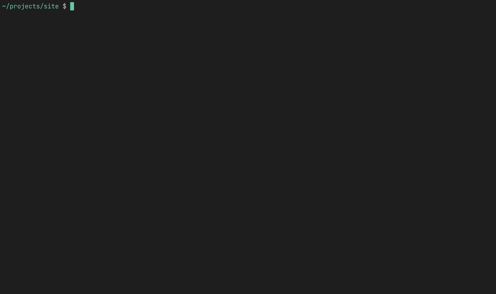
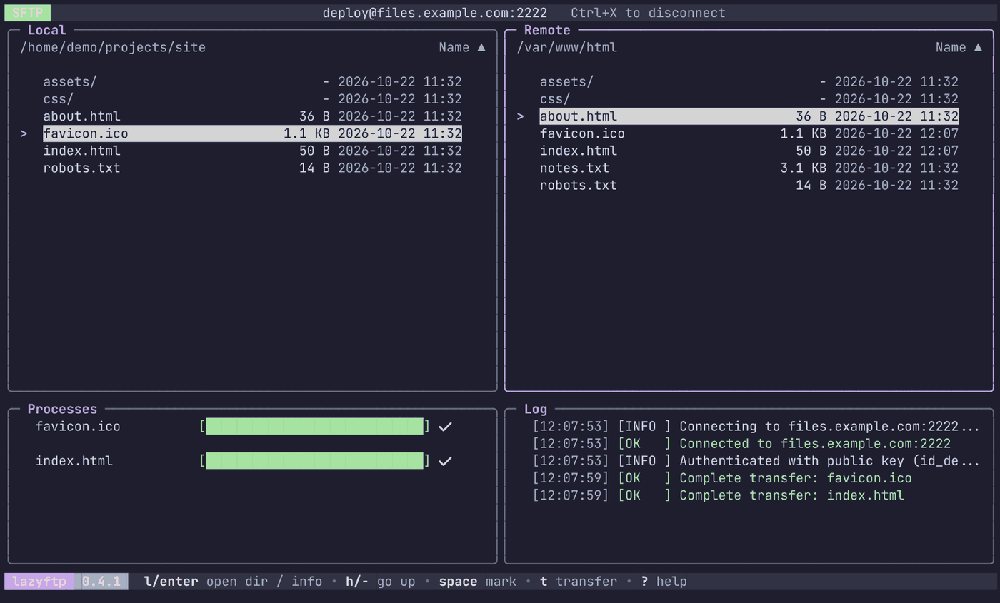
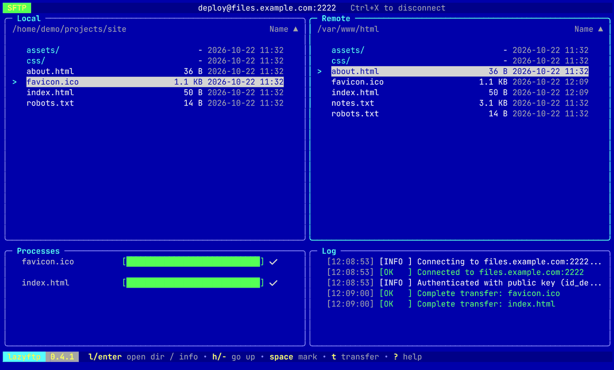

FTP · FTPS · SFTP
File transfers, without leaving the keyboard.
A simple, keyboard-driven TUI client inspired by lazygit. If you live in the terminal and keep switching to a GUI just to move files, this is for you.
Binaries for Linux, macOS and Windows, x86-64 and arm64. No Go toolchain needed. For an archive, put lazyftp on your PATH. Anything else is on the releases page.

From the shell to a transfer: filling in the connection dialog for SFTP, marking two local files to upload, then downloading one from the server.
One client, three protocols.
Flags
--verboseShow the FTP control dialogue in the Log panel--log-file <path>Write the log to a file as well--no-nerd-fontsPlain Unicode symbols instead of Nerd Font icons--highlight-diffMark files that differ between Local and Remote-i, --identity <path>SFTP private key to try first--protocol <ftp|ftps|sftp>Protocol, when the destination has no scheme--versionPrint the version and exitConnection failing?
Put the whole exchange in a file you can attach to an issue. Passwords are masked.
lazyftp --verbose --log-file lazyftp.log
Verbose lines are marked DEBUG. For FTP and FTPS they are the raw control dialogue; SFTP has no equivalent, so you get one line per request instead.
FTPS refused and the credentials are right? The server most likely does not offer TLS. Connect over FTP instead.
Connect your way.
From the command line
lazyftpOpens the connection dialoglazyftp nasA favorite, or a Host from ~/.ssh/configlazyftp ana@nas.lanuser@host: FTP unless the port or scheme says otherwiselazyftp ana@nas.lan:22Port 22 means SFTP, 990 means FTPSlazyftp sftp://ana@nas.lan:2222The scheme is explicit: ftp, ftps or sftplazyftp -i ~/.ssh/work sftp://nasA private key for this connectionA destination connects at once when nothing more is needed: a stored password, or SFTP with an agent or key. Otherwise the connection dialog opens filled in. The password is never accepted on the command line, so it stays out of your shell history: user:pass@host is refused. A saved name wins over a host of the same name. Flags go before the destination.
In the connection dialog (Ctrl+L)
ProtoFTP, FTPS or SFTP. Cycle with ← / →Host, User, PassServer, username and passwordPortLeave empty for the default: 21 for FTP and FTPS, 22 for SFTPKeyOptional, SFTP only: path to a private key (~ works). Tried before the agent and the default keys. If it is encrypted, type its passphrase in PassEnter connects. Esc closes the dialog, or gives up on an attempt that is taking too long. SFTP uses the ssh-agent, key files and verified host keys, and reopens the session if the server drops it. FTPS certificates are verified, so a self-signed one is refused.
Saved connections
FavoritesCtrl+S saves host, user, port and protocol under a name. Ctrl+O lists them: Enter connects, e edits, d deletesRecentCtrl+R lists the last ten, most recent first. Passwords are never remembered~/.ssh/configEvery concrete Host shows up in the Ctrl+O list, tagged ssh, with its HostName, User, Port and IdentityFile. Read only. ProxyJump, ProxyCommand and Match are not supportedPasswords are never written to the config file. While saving, Tab toggles “remember password”, which stores it in the system keyring (Secret Service, Keychain or Credential Manager).
Three keystrokes to move a file.
Navigate
Move with j / k or the arrows. Enter opens a directory, - goes up.
Mark
Press Space on as many files or directories as you like for a batch transfer.
Transfer
Press t. In the local panel it uploads; in the remote panel it downloads.
Keybindings
Global
Panels
Connection dialog
Log & Processes
What you get
Built with Bubble Tea, Bubbles and Lip Gloss.
Colors from a file.
Pick a theme
A theme is a TOML file in a themes directory next to config.toml (~/.config/lazyftp/themes/ on Linux). Pick one by name in config.toml, without the extension, and restart. Catppuccin Mocha and Latte are built in; a file of the same name in your themes directory replaces them.
theme = "catppuccin-mocha"
Make your own
Adding a theme is adding a file, no code involved. It has a [dark] and a [light] table, used according to your terminal’s background, and each names any of the 13 tokens as #RGB or #RRGGBB. A token you leave out keeps the built-in color. default.toml lists every token and what it colors, and borland.toml is a complete example. A theme that cannot be loaded is explained on the console, and lazyftp starts with the default colors. NO_COLOR wins over any theme.


Roadmap
Install
go install
go install github.com/MawCeron/lazyftp@latest
From source
git clone https://github.com/MawCeron/lazyftp.git
cd lazyftp && go build -o lazyftp .